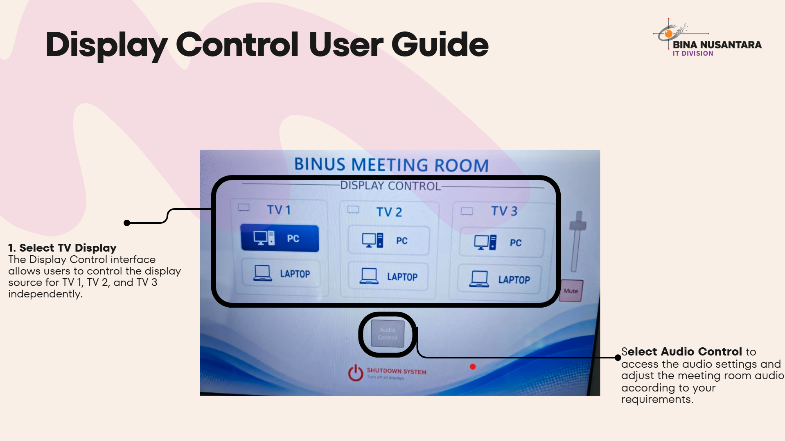
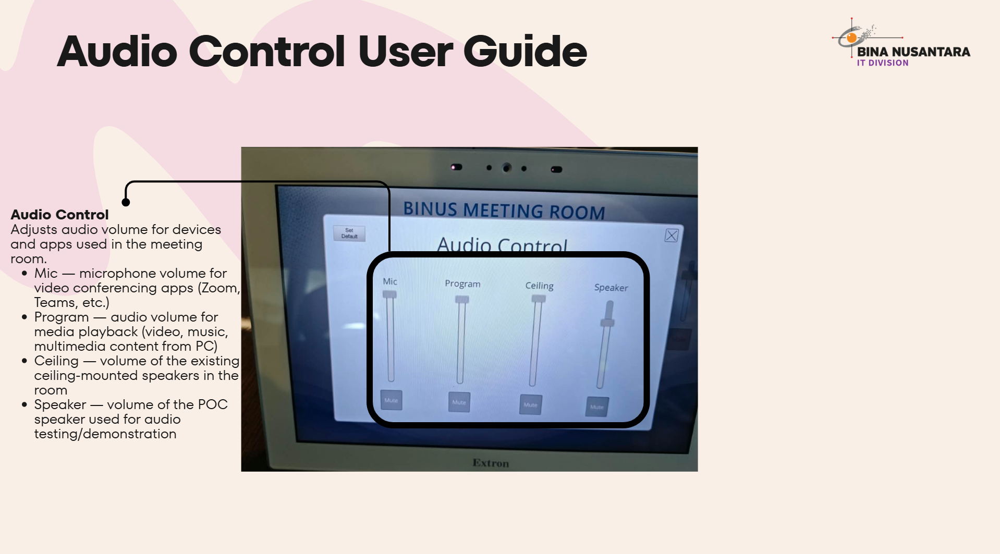

Guideline Touch Panel Control
Learn how to use the Display Control system to manage the display source, audio, and TV operation in the BINUS Meeting Room.
Steps to connect
Step 1:
- Display Control User Guide

Step 2:
Audio Control

Tips
-
Check network connection
-
Restart device if connection fails